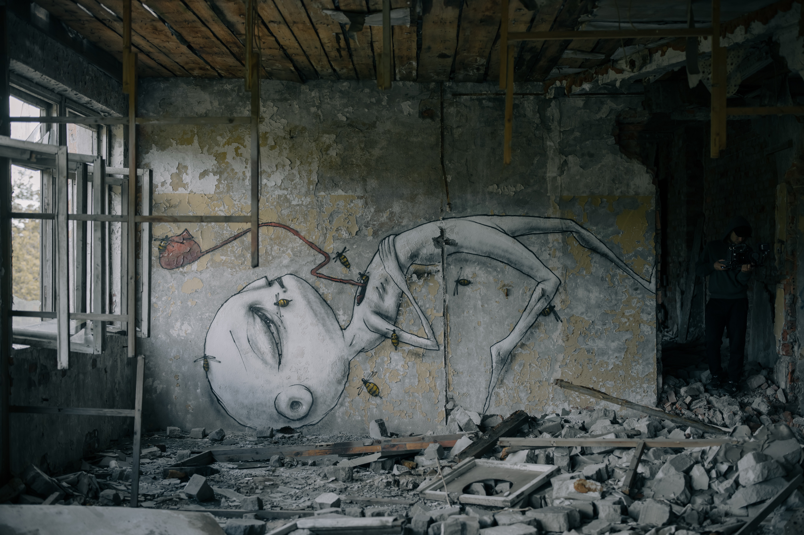

ABOUT US

우리는 Shelter에서 사람들을 보호하는 것이 가장 주목적이다. 좀비들이 내부로 들어오지 않도록
주기적인 정찰 및 청소를 진행하고, 벽 밖의 생존자들을 무사히 구출한다. 현장팀, 지휘팀, 내부팀으로 총 세 개의 팀으로 이루어져
활동한다. 현장팀은 벽 밖에서 정찰과 청소를 진행하고 생존자를 구출한다. 전투 능력이 뛰어나다. 지휘팀은 현장팀의 원활한
임무 수행을 위해 지령 및 서포터 일을 하고 있다. 컴퓨터 및 다양한 기기를 만지는 능력이 뛰어나다. 내부팀은 쉘터의 사람들을
돌보고 통제하는 일을 하고 있다. 리더쉽과 빠른 상황 판단 능력이 뛰어나다. 모든 직원들은 특출한 면접을 통하여 신중하게
뽑았다.